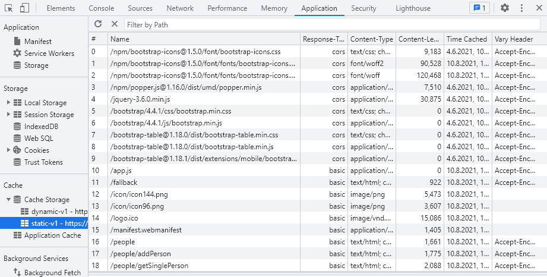

Nachdem die passende Strategie gewählt ist, ist zu überlegen, welche Daten gecached werden sollen.
Handelt es sich bei den Inhalten der Webseite lediglich um statische Assets, so ist diese Aufgabe recht einfach
und schnell erledigt.
Kommen dynamische Assets hinzu, gestaltet sich die Umsetzung der passenden Cache-Strategie als wesentlich komplizierter.
Statische Assets
Zu den statischen Assets gehören:
Alle verwendeten Bilder/Icons/Logos
Die CSS-Datei bzw. Bootstrap
Die externe JavaScript-Datei (app.js)
Das Web-App-Manifest
Die HTML-Seiten

Bei nur statischen Assets ist es sinnvoll, diese im install-Event zu cachen.
Dafür muss, wie beim Cachen der Fallbackpage der Cache geöffnet und gefüllt werden.
Das fetch-Event hingegen ist deutlich anders aufgebaut als bei der installierbaren PWA.
Es beantwortet erstmal alle Anfragen beziehungsweise Seitenaufrufe aus dem Cache.
Fehlen Assets teilweise, so werden diese vom Netzwerk angefragt (gefetched).
Wenn es darum geht, dass die PWA sowohl statische als auch dynamische Assets enthält, muss erstmal festgelegt werden,
welche Assets statisch sind und welche dynamisch.
Zu den dynamischen Assets zählen alle die, die sich ständig verändern, also beispielsweise von Nutzern verändert
werden können oder aus Datenbanken ausgegeben werden.
Im Beispiel der Personentabelle sind das alle Personen, die in der Tabelle hinzugefügt wurden und deren Attribute.
Des Weiteren muss überlegt werden, welche der dynamischen Daten relevant genug sind, um diese offline zur Verfügung stellen zu wollen.
ServiceWorker:
Für das Cachen von dynamischen Assets muss der ServiceWorker erweitert werden.
Dort wird nun, neben dem statischen Cache, der dynamische Cache mit Assets befüllt.
Die ServiceWorker-Datei darf nicht gecached werden!
Zu den dynamischen Assets gehören:
Die Funktionen, die auf die dynamischen Inhalte zugreifen, die gecached werden sollen
Funktionen zur Validierung der Nutzereingaben
Die statischen und dynamischen Assets werden im Beispiel im install-Event dem entsprechenden
Cache hinzugefügt.
Dabei werden die beiden Caches separat und nacheinander mit der caches.open-Funktion erstellt.
Daraufhin werden diese mit Hilfe der addAll bzw. add-Funktion gefüllt.
Des Weiteren werden, wie im vorherigen Kapitel bereits erklärt, im activate-Event die Caches gelöscht, die nicht dem aktuellen Cache entsprechen.
Hier kommt dazu, dass neben dem statischen Cache nun auch der dynamische Cache überprüft werden muss.
Neben dem install und dem activate-Event muss ebenfalls das fetch-Event erweitert werden.
Dieses arbeitet nach der bereits erwähnten "Cache then Network"-Strategie.
Das fetch-Event der Beispiel-PWA unterscheidet dabei zwischen mehreren Ereignissen, die eintreten können:
Zeile 1-10: Sind die abgefragten dynamischen Assets im Cache enthalten,
so werden diese dem Cache entnommen und angezeigt. Gleichzeitig wird eine Netzwerkanfrage gesendet
und ein Klon der response mit Hilfe der cache.put-Funktion in den dynamischen
Cache gespeichert. Daraufhin wird die response der Netzwerkanfrage angezeigt
Zeile 11-16: Wenn die fetch-Anfrage der externen JavaScript-Datei (app.js) eine einzelne Person anfragt,
um die Personendaten beispielsweise im Formular zur Bearbeitung anzuzeigen, so wird dieser Fall verwendet
Zeile 17-33: Dieser Abschnitt behandelt die statischen Assets. Im try-Block wird versucht,
die statischen Inhalte aus dem Cache zu erzeugen. Sind diese nicht vorhanden,
so greift der catch-Block und die Fallbackpage wird angezeigt
Die in der app.js-Datei implementierte Funktion initTable baut eine leere Personentabelle auf.
Dort werden danach über die writeToView-Funktion die Daten eingefügt.
Dabei ist wichtig, dass die Tabelle der initTable-Funktion sowohl alle Attribute der Personen enthält,
als auch ein Feld für die Buttons zum Editieren und Löschen der Person.
Aktualisiert der Nutzer die Seite, wenn er online ist, so wird ein fetch-Event mit der angegebenen
URL ausgelöst.
Über die Boolean-Variable networkDataReceived wird abgefragt, ob Daten aus der Netzwerkanfrage erhalten wurden.
let people = null;
let networkDataReceived = false;
if (navigator.onLine) {
initServiceWorker();
people = fetch("http://localhost/people/getPeople")
.then(response => {
if (response.status === 401) {
window.location.href = "http://localhost/";
}
return response.json()
})
.then(data => {
networkDataReceived = true;
writeToView(data);
})
}
Sind keine Daten enthalten, so werden die Daten aus dem Cache in die View geschrieben.
Bei der URL handelt es sich um die im Controller enthaltene getPeople-Funktion,
welche ein JSON-Objekt zurückgibt.
Durch das fetch-Event in der app.js-Datei wird das fetch-Event im ServiceWorker ausgelöst,
da die app.js, anders als der ServiceWorker, nicht auf einem eigenständigen Thread läuft.
Der ServiceWorker fängt daraufhin die aufgerufene URL ab, erkennt statische bzw. dynamische Daten und reagiert dementsprechend.
Sind die Assets statisch, so werden diese aus dem Cache geladen.
Wenn es sich allerdings um dynamische Daten handelt, so fragt der ServiceWorker die Daten am Server an,
fetched die Antwort, speichert eine Kopie im Cache und gibt die Antwort an die ursprüngliche Anfrage zurück.
Das dabei empfangene JSON-Objekt wird dann über Bootstrap Table in HTML dargestellt.
Sollte keine Internetverbindung bestehen, so wird der dynamische Cache durch die cache.open-Funktion geöffnet
und die darin zuletzt vom Server erhaltenen Assets in der View ausgegeben.
Die writeToView-Funktion lädt die erhaltenen Inhalte in die Personentabelle.
function writeToView(people) {
peopleTable.bootstrapTable('load', people);
}
Der EventListener('online') sowie EventListener('offline') aktualisiert die Webseite,
sobald registriert wird, dass diese offline bzw. wieder online gegangen ist.
CodeIgniter wird für die Read-Only und die Read-Write PWA nicht mehr als "reines" MVC-Framework verwendet.
Daten werden nun durch die Verwendung von ResponseTrait über JavaScript vom Controller angefragt,
damit dieser API-Funktionalitäten bereitstellt.
//Vorher
public function index(): string
{
$data['people'] = $this->_peopleModel->getPeople();
return view('people', $data);
}
//Nachher
public function index(): string
{
return view('people');
}
Das bedeutet konkret, dass die index-Funktion kein $data-Array mehr enthält,
in das die Daten des Model geladen werden und die schließlich an die View übergeben werden.
Stattdessen müssen nun neue Funktionen implementiert werden, die die Daten abfragen können.
Im Beispiel der Personentabelle sollen alle Personen, die online zur Tabelle hinzugefügt wurden, offline weiter einsehbar sein.
Die getPeople-Funktion überprüft als allererstes, ob die Cookies gesetzt sind,
da diese relevant für die Validierung der Nutzereingaben sind.
Sind diese gesetzt, so werden sie gelöscht und neu gesetzt.
Daraufhin werden die Daten wie gewohnt über die getPeople-Funktion des Models der Datenbank entnommen
und in der Variable $people gespeichert.
Mit Hilfe der for-Schleife werden dann die Attribute "Adresse" und "Name" zusammengefasst,
da diese auch gemeinsam in einer Spalte der Tabelle auftauchen.
Des Weiteren werden für jede Person die beiden Buttons mit der jeweiligen ID generiert.
public function getPeople(): Response
{
... //unset und set cookies
$people = $this->_peopleModel->getPeople();
... //Zusammenfassen der Attribute
return $this->respond($people)
->setContentType('application/json');
}
Anschließend werden die Daten nicht, wie bei der Umsetzung nach dem MVC-Konzept,
direkt in die View geschrieben, sondern als Antwort vom Server im JSON-Format zurückgegeben,
damit JavaScript diese verarbeiten kann.